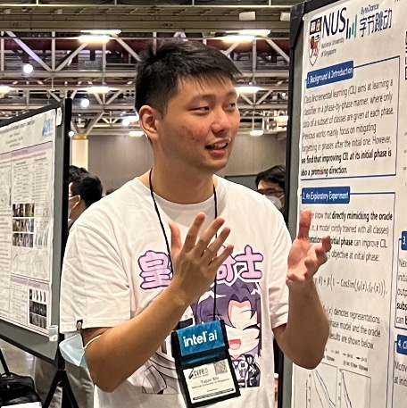

|
施宇钧 (Yujun Shi)
Greetings! My name is Yujun Shi.
I'm currently a PhD student in ECE, National University of Singapore,
advised by Assoc Prof. Vincent Y. F. Tan
and Dr. Jiashi Feng.
Previously, I received my B. Eng in Computer Science in Nankai University, advised by Prof. Mingming Cheng.
I work on Machine Learning/Computer Vision in general.
Currently, I'm especially interested in Federated/Continual Learning.
I am open to discussion or collaboration. Feel free to drop me an email if you're interested.
Email /
CV /
Google Scholar /
Github
It's about a man who has nothing, who risks everything, to feel something. --Jessica Day
|

|
Towards Understanding and Mitigating Dimensional Collapse in Heterogeneous Federated Learning
Yujun Shi,
Song Bai,
Jian Liang,
Wenqing Zhang,
Vincent Y. F. Tan
ICLR, 2023
[arXiv link]
[code]
We find dimensional collapse of representations is one of the culprit behind the performance degradation
in heterogeneous Federated Learning. We propose FedDecorr to mitigate such problem and thus
facilitating FL under data heterogeneity.
|
Mimicking the Oracle: An Initial Phase Decorrelation Approach for Class Incremental Learning
Yujun Shi,
Kuangqi Zhou,
Jian Liang,
Zihang Jiang,
Jiashi Feng,
Philip Torr,
Song Bai,
Vincent Y. F. Tan
CVPR, 2022
[arXiv link]
[code]
[bibtex]
[poster]
[video]
We propose a Class-wise Decorrelation regularizer that enables CIL learner at initial phase to mimic representations
produced by the oracle model (the model jointly trained on all classes) and thus boosting Class Incremental Learning.
|
All Tokens Matter: Token Labeling for Training Better Vision Transformers
Zihang Jiang,
Qibin Hou,
Li Yuan,
Daquan Zhou,
Yujun Shi,
Xiaojie Jin,
Anran Wang,
Jiashi Feng
NeurIPS, 2021
[arXiv link]
[code]
Instead of only supervising the classification token in ViT,
we propose a novel offline knowledge distillation method that supervises all output tokens
and significantly boost ViT performance.
|
Tokens-to-Token ViT: Training Vision Transformers from Scratch on ImageNet
Li Yuan,
Yunpeng Chen,
Tao Wang,
Weihao Yu,
Yujun Shi,
Zihang Jiang,
Francis E. H. Tay,
Jiashi Feng,
Shuicheng Yan
ICCV, 2021
[arXiv link]
[code]
By injecting the missing local information into vanilla ViT with our proposed T2T module,
we achieve decent ImageNet classification accuracy when training ViT from scratch.
|
Continual Learning via Bit-Level Information Preserving
Yujun Shi,
Li Yuan,
Yunpeng Chen,
Jiashi Feng
CVPR, 2021
[arXiv link]
[code]
[bibtex]
[talk @ ContinualAI]
By viewing learning algorithm as a channel (input data and output model parameters)
and using chain rule of mutual information,
we propose a novel algorithm called Bit-Level Information Preserving (BLIP) to combat forgetting.
|
Leveraging Instance-, Image- and Dataset-Level
Information for Weakly Supervised Instance
Segmentation
Yun Liu,
Yu-huan Wu,
Peisong Wen,
Yujun Shi,
Yu Qiu,
Ming-Ming Cheng
TPAMI
[paper link]
[code]
By leveraging multi-level information,
we achieve SOTA results on weakly-supervised instance/semantic segmentation.
|
|
|
National University of Singapore, Singapore
PhD in Machine Learning (Jan. 2021 to present)
|
|
|
Nankai University, Tianjin, China
B. Eng in Computer Science (2015 to 2019)
GPA: 92.14/100, Rank: 1/93
|
|
|
Changsha First Middle School, Changsha, China
High School (2012 to 2015)
|
Relevant Courses
EE6139 Information Theory and its Applications
EE5137 Stochastic Process
IE6520 Theory and Algorithms for Online Learning
|
Tutoring & TA
EE2211 Introduction to Machine Learning (Fall 2022)
EE2012A Analytical Methods in Electrical and Computer Engineering (Spring 2022)
|
Awards
NUS Research Scholarship (Jan 2022 - Jan 2025)
National Scholarship Award, PRC (2016)
Nankai First Class Scholarship (2017, 2018)
|
Academic Service (Reviewer)
CVPR 2023, ICCV 2023, CoLLAs 2023
TNNLS (2022), CoLLAs 2022
|
Invited Talk
I'm always more than willing to give a talk about my works and my field of study!
Feel free to reach out :)
Introduction to Federated Learning @ UMass Amherst, host: Hong Yu
Continual Learning via Bit-Level Information Preserving @ ContinualAI, host: Vincenzo Lomonaco
|
|
{kind=link}